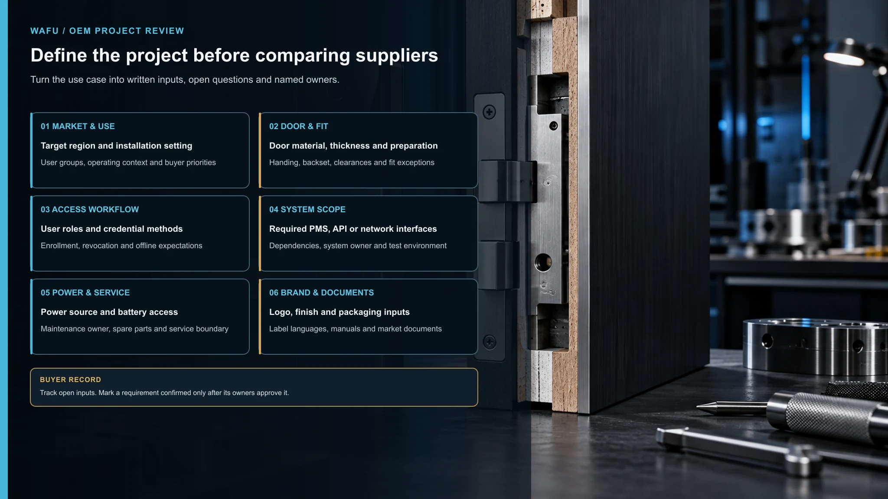
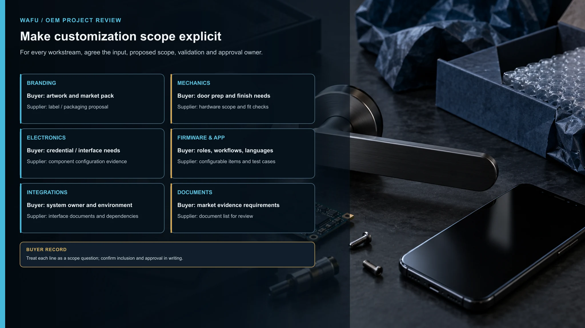
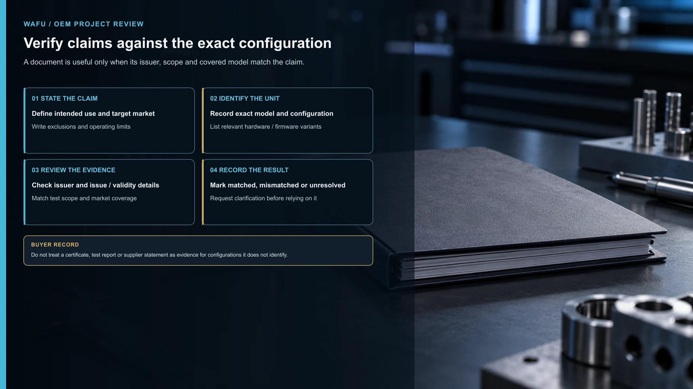
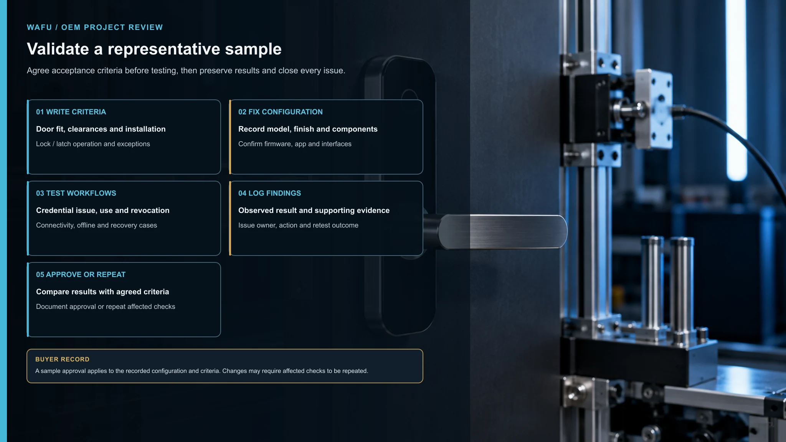
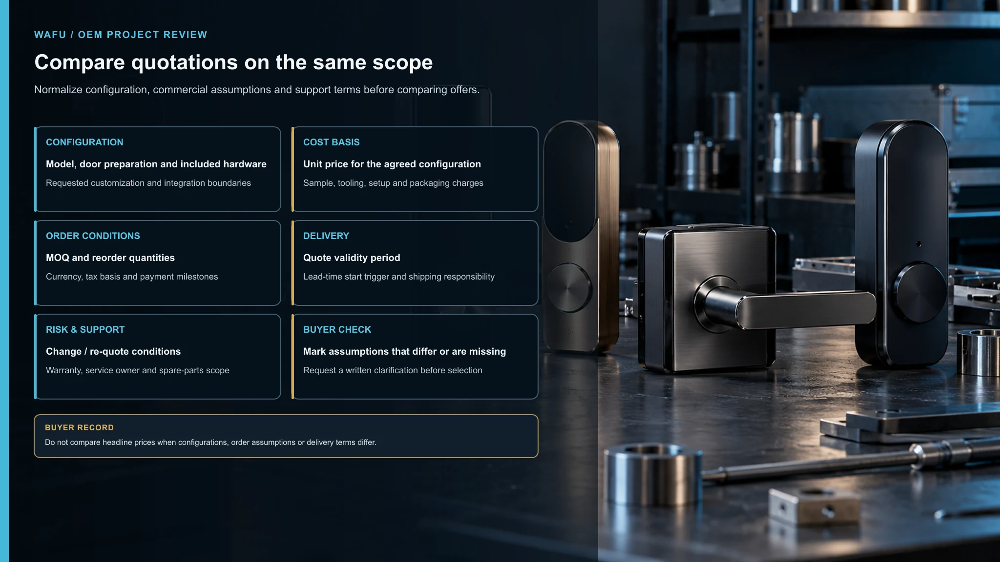
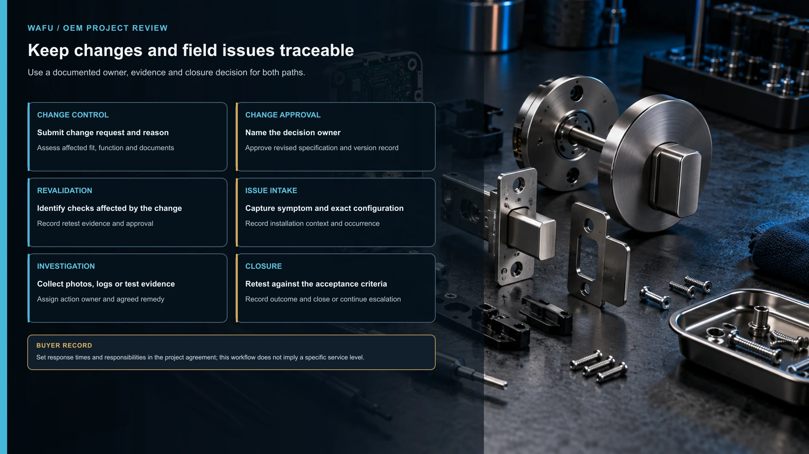

本指南提供买家评估框架。技术、商务和市场要求应针对具体型号、配置及项目文件确认。
选择智能锁 OEM 制造商，不只是比较产品图片或询问单价。合适的供应商需要理解项目、明确可讨论的定制范围、为相关声明提供证据，并与你约定如何管理样品、生产变更、质量检查和售后支持。
具体要求会因产品、目标市场和订单而异。所有商务或技术说法都应记录下来，并针对计划采购的型号和配置进行核实。
本指南为品牌方、经销商和 B2B 采购团队提供结构化评估流程，帮助你在下单前审查潜在制造合作方。
1. 从项目需求出发，而非产品目录
联系供应商前，先写清智能锁必须满足的项目条件。明确的项目简报便于供应商按相同要求回复和比较方案。
记录以下信息：
- 目标国家或市场及安装环境
- 门的类型、材质、厚度、开向和现有五金
- 用户群体及所需开门方式
- 联网、软件或门禁系统集成要求
- 电源、应急开门预期和维护限制
- 外观、表面处理、包装、语言和品牌需求
- 所需文件、测试和审批步骤
- 预期上市时间及尚待决定的事项
把强制要求与偏好分开。必须支持的集成或门体适配约束，不应与偏好的表面颜色采用相同权重。
要求供应商标明假设和未解决问题。若方案只列产品，却没有回应安装和使用条件，就还不能算项目适配评估。

2. 明确制造与定制范围
“OEM”和“ODM”可能代表不同工作深度。仅凭标签无法判断具体改什么、谁负责设计决策，以及哪些事项需要验证。
请供应商具体说明拟定范围：
- 以哪个现有型号或平台为起点？
- 品牌、包装、外观、机械结构、电子、固件、应用或集成中，哪些项目可能变更？
- 哪些变更需要新模具、软件开发、测试或文件？
- 哪些要求不在当前提案范围内？
- 部件、接口和设计输入由谁提供并批准？
- 各阶段将交付哪些成果？
要求提供书面范围表，列出变更、责任方、预期产出、审批人和依赖条件。讨论中的功能应标注为提案，不要写成已确认能力。

可参阅智能锁供应商证据矩阵。关于贴牌与开发的差别，另见ODM 开发指南。
3. 核验证据，而非只听声明
供应商网站或介绍材料可用于初步筛选，但决策应依据与评估型号和配置对应的证据。
针对每项重要声明，询问：
- 证据对应哪个型号和配置？
- 文件由谁出具或编制？
- 是否注明测试方法、版本或日期？
- 适用于整机、某个部件，还是其他产品？
- 若文件与项目要求的配置不同，供应商如何解释？
可用资料包括产品规格、图纸、受控部件清单、质量流程、测试报告、过程记录和样品构建信息，具体取决于项目。
带有熟悉标识或标准名称的文件，并不自动证明它覆盖所选配置。记录文件标题、出具方、日期、型号范围和待解决问题。

关于现场技术和生产评估，可参阅工厂评估指南。
4. 按书面要求验证样品
样品应按双方约定标准评估，而不只是检查能否通电或外观是否合意。测试前准备样品验收表，写明准确配置、测试条件、通过标准和签字人。
根据项目，检查可包括：
- 与目标门体、门框和五金的适配
- 安装步骤、间隙和维护空间
- 预期条件下的上锁与开锁行为
- 用户流程、权限及所需集成
- 供电表现及约定的低电量或应急流程
- 表面处理、标签、包装和配件
- 所需记录、说明和市场文件
记录样品型号、软硬件版本、测试设置、结果、缺陷和纠正措施。样品修改后确认改动，并重做受影响的检查。

样品批准须说明批准了什么。除非版本和验收条件一致，不要把它视为对量产配置的自动批准。
5. 确认认证与市场文件
认证要求取决于目标市场、产品设计、无线或供电配置及预期用途。请供应商提供对应型号和配置的文件，并与进口商、测试实验室或合规顾问确认要求。
确认：
- 考虑了哪些市场要求
- 拟定配置有哪些报告或证书
- 文件覆盖整机还是选定部件
- 品牌、外壳、无线模块、电源或固件变更是否影响适用性
- 谁负责测试、申报、技术文件、标签和更新
- 出货或销售前必须完成哪些批准
建立文件清单，注明所需文件、责任人、状态、目标日期和审批证据。不要只凭“已认证”声明作判断，应核对范围和适用性。
6. 比较 MOQ、价格与交期
不同配置、数量或交付条件下的报价难以比较。要求候选供应商根据同一份书面需求报价。

要求报价拆分并说明：
- 产品配置及所含配件
- 单价口径、币种和适用数量
- 按型号、表面处理、包装或定制区分的 MOQ
- 样品和开发费用（如有）
- 模具或一次性费用（如有）
- 包装、标签和运输假设
- 报价有效期及付款条件
- 交期假设及排期起算事件
询问配置、文件审批、样品批准或部件供应变化如何影响排期。MOQ 和交期应作为特定项目的书面承诺确认；不要从目录或其他订单推断。
7. 约定质量与工程变更控制
质量讨论应说明如何从样品批准到生产保持产品符合约定，并确认可查阅哪些项目记录。
明确约定：
- 批准的规格和样品基准
- 来料、制程和最终检验的责任
- 缺陷定义、验收标准和纠正措施流程
- 批次标识与追溯记录
- 不合格品如何隔离和报告
- 如何提出、评审、批准并记录变更
部件、固件、模具、生产地点或测试方法变更可能影响适配、行为、文件或市场要求。约定先评估影响，并由指定负责人批准再实施。
如需深入了解生产和质量证据，可阅读供应链指南。
8. 明确售后与产品支持
问题发生前就应商定支持预期。明确针对计划中的产品和市场，供应商提供哪些服务及其边界。
讨论：
- 技术和质量问题的联系渠道
- 调查现场问题需要的信息
- 问题分类和升级方式
- 备件、维修、替换或其他约定补救方式
- 适用时的软件或固件维护责任
- 保修范围、期限、除外情况和申诉流程
- 产品记录与配置历史的保存期限
把责任和响应预期写入项目协议或支持文件。不要假定某型号、地区或客户的支持政策自动适用于其他项目。

9. 智能锁 OEM 买家清单
选择供应商前，确认以下问题已有答案：
- 是否记录目标市场、门体情况、用户、集成和运行要求？
- 是否区分强制要求、偏好和未决事项？
- OEM/ODM 范围是否明确列出变更、交付物、责任和审批？
- 每项重要声明是否对应型号、配置和证据？
- 是否有书面样品标准及批准配置记录？
- 是否明确所需市场文件和责任方？
- 各家报价是否基于相同范围和假设？
- 检验、缺陷、纠正措施和变更是否有文件流程？
- 售后责任、保修条款和升级渠道是否明确？
- 是否清楚哪些事项尚未核实、下单前由谁解决？
如果仍有未知项，请列出待办、负责人和截止日期。用清单指导下一次沟通，不要把不完整方案当作最终报价。
10. 索取 OEM 项目清单
结构化清单能帮助团队在比较供应商前统一需求。讨论 OEM 项目时，请提供目标市场、门体或安装环境、功能、定制范围，以及已有文件或样品。
索取 OEM 项目清单
提供目标市场、门体或安装环境、所需功能、定制范围，以及已有文件或样品，便于讨论项目要求。
如需了解更全面的采购框架，可阅读B2B 智能锁 OEM 采购白皮书。